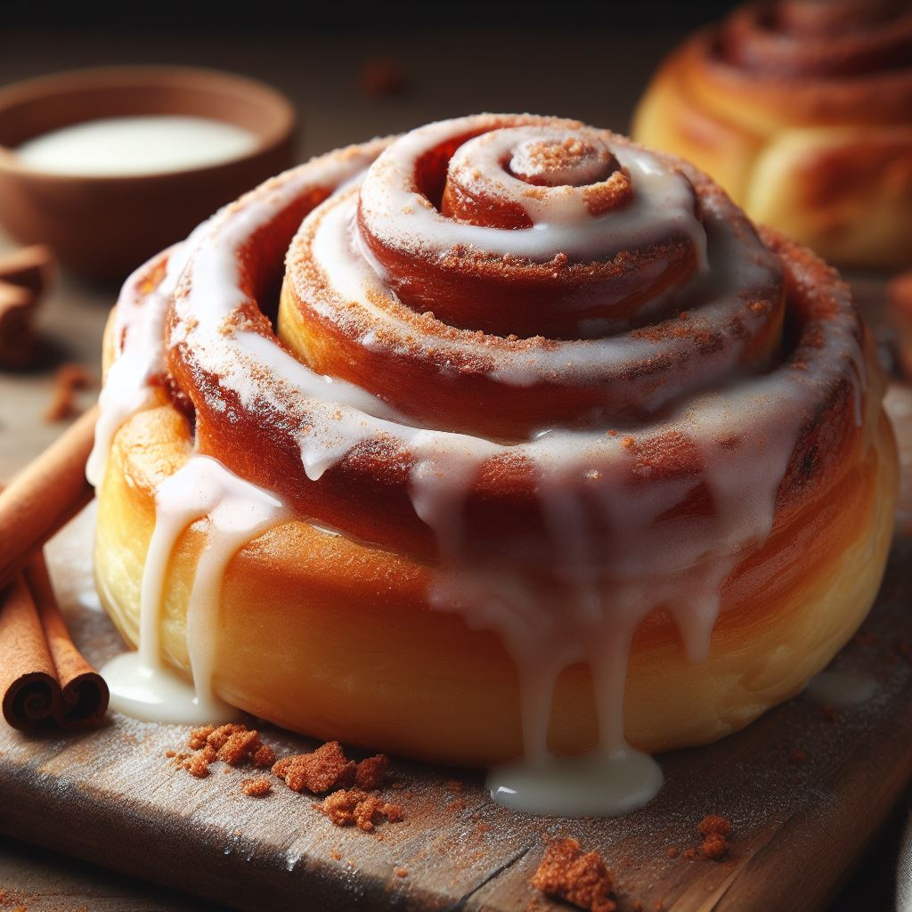

Heavenly Cinnamon Rolls

There's nothing quite like the aroma of freshly baked cinnamon rolls wafting through the kitchen, beckoning you to come closer. These pillowy swirls of dough, generously coated in a gooey cinnamon-sugar filling and topped with a luscious cream cheese glaze, are a testament to the magic that happens when simple ingredients come together with a little love and patience. Join me on this delightful journey as we embark on a cinnamon roll adventure that will leave you craving for more!
For the Dough
- 1 packet (2 1/4 tsp) active dry yeast
- cup warm milk (110°F)
- 1/2 cup granulated sugar
- 1/3 cup unsalted butter, softened
- 2 large eggs
- 4 1/2 cups all-purpose flour
- 1 tsp salt
For the Filling
- 1 cup brown sugar, packed
- 2 1/2 tbsp ground cinnamon
- 1/3 cup unsalted butter, softened
For the Cream Cheese Glaze
- 4 oz cream cheese, softened
- 1/4 cup unsalted butter, softened
- 1 1/2 cups powdered sugar
- 1 tsp vanilla extract
- 2-3 tbsp milk
Instructions:
- Activate the Yeast:
- In a small bowl, combine warm milk, a pinch of sugar, and the active dry yeast. Let it sit for about 5 minutes until it becomes frothy.
- Mix the Dough:
- In a large mixing bowl, cream together the softened butter, sugar, and eggs. Add the yeast mixture and mix until well combined. Gradually add the flour and salt, mixing until a soft dough forms.
- Knead and Rise:
- Turn the dough onto a floured surface and knead it for about 5-7 minutes, or until it becomes smooth and elastic. Place the dough in a greased bowl, cover it with a damp cloth, and let it rise in a warm place for 1-1.5 hours, or until it has doubled in size.
- Roll and Fill:
- Once the dough has risen, punch it down and roll it out into a 16x21 inch rectangle. Spread the softened butter evenly over the dough and sprinkle the cinnamon-sugar mixture on top.
- Roll and Cut:
- Starting from one long end, tightly roll up the dough and cut it into 12 equal pieces. Place the rolls in a greased 9x13 inch baking dish.
- Second Rise:
- Cover the baking dish with a clean kitchen towel and let the rolls rise for another 30 minutes.
- Bake:
- Preheat your oven to 350°F (175°C). Bake the rolls for 25-30 minutes, or until they turn golden brown.
- Make the Glaze:
- While the rolls are baking, prepare the cream cheese glaze. In a medium bowl, beat together the softened cream cheese, butter, powdered sugar, vanilla extract, and milk until smooth and creamy.
- Glaze and Serve:
- Allow the cinnamon rolls to cool for a few minutes before generously drizzling the cream cheese glaze over the top. Serve warm and enjoy the heavenly aroma and taste!
These cinnamon rolls are a labor of love, but every bite is worth it. The soft, tender dough wrapped around the sweet, cinnamony filling, and topped with that decadent cream cheese glaze, creates a symphony of flavors and textures that will leave you coming back for more. So go ahead, treat yourself and your loved ones to these mouthwatering delights and savor the warmth and comfort they bring to your soul. Happy baking!